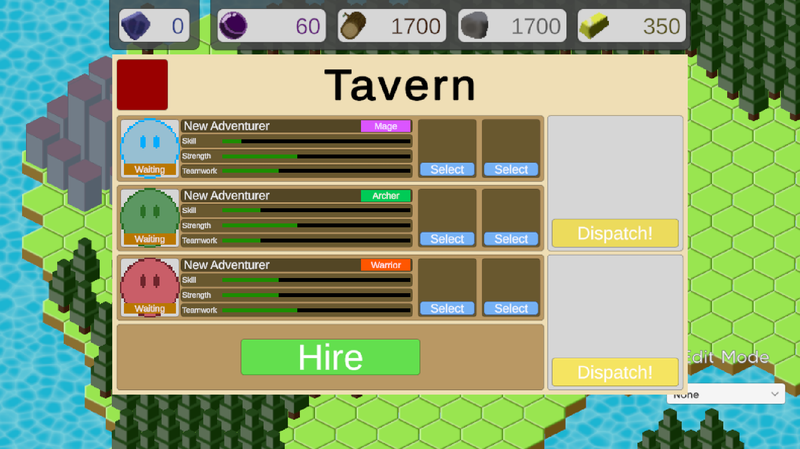
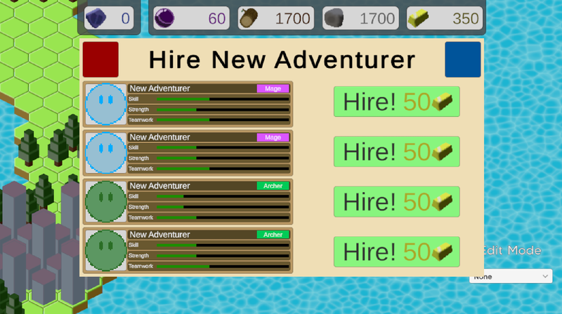
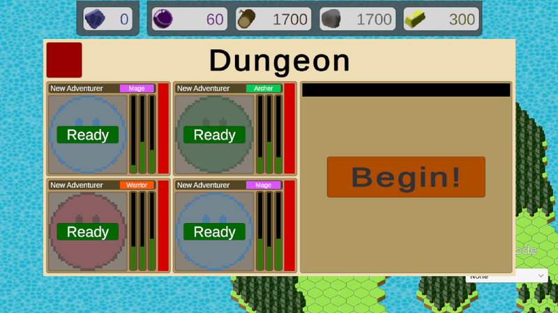
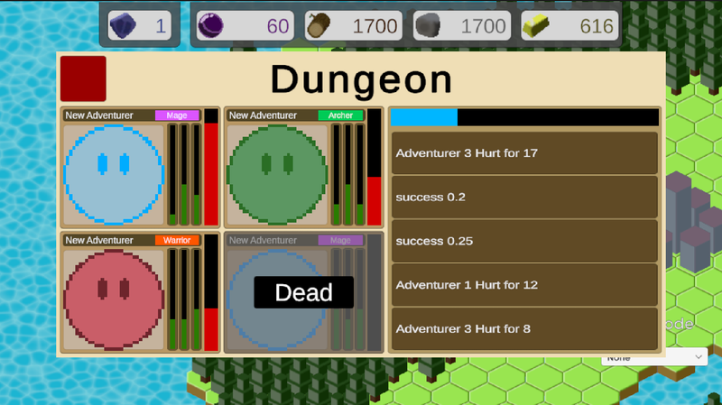
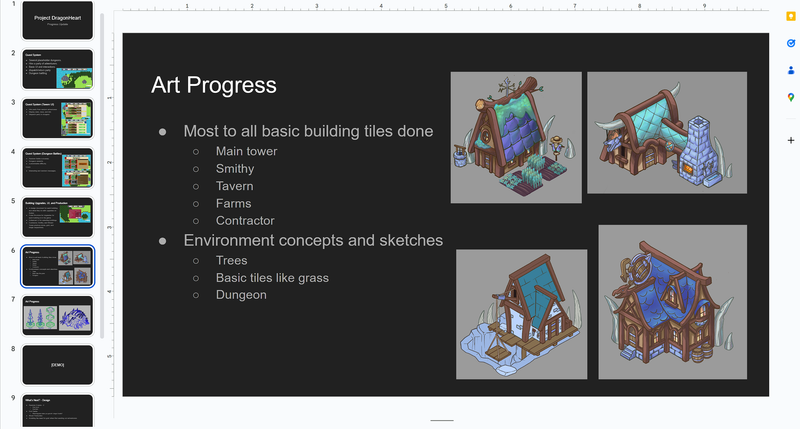
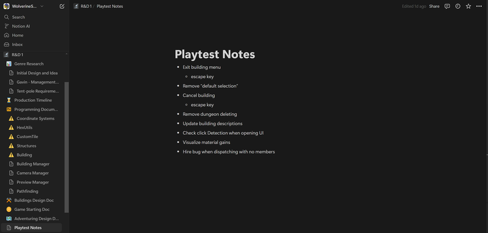
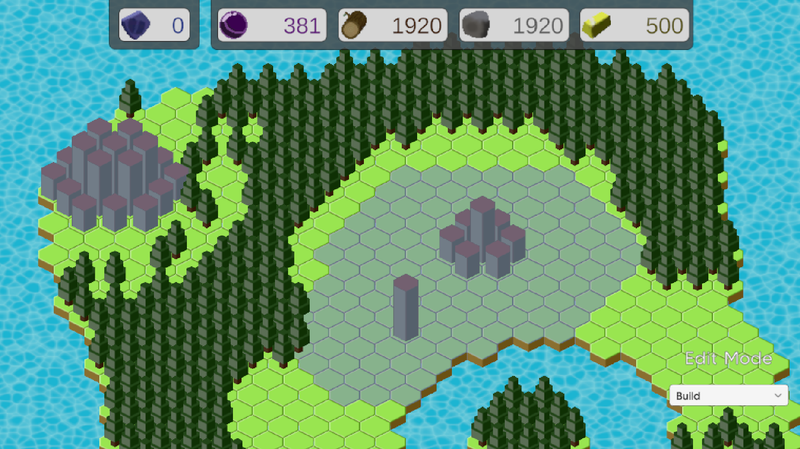
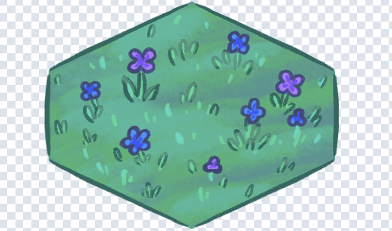

Nadav couldn't be present for this meeting, which worked out as there wasn't very much we needed to do in particular for this week's meet. After the basic weekly announcements and catching up with the main project Sandcastle group, Connor and I found a spot to work on the project. We spent some time going over each of our contributions to the project and programming decisions and implementations for out respective features so we were both up-to-date with the code.
One of the core components of the Quest system will be the Party Manager. This script manages the adventurers that the players have hired and contains the logic for sending them on quests, hiring new adventurers, and create new randomly generated adventurers. While most of the functions of this script will be dictated through UI that will be created later, the underlying logic can be designed now.
First I created an Adventurer script which contains the adventurer class and several enumerators to represent different forms of information about the adventurer. The adventurerInfo is a scriptableObject which groups the face asset for the UI, the body asset for when the adventurer is travelling through the world, and the class of the adventurer so the art of each adventurer can be designed around a specific class.
The PartyManager manages an array of 4 adventurers. It provides public scripts for the Tavern to hire new adventurers and provides methods to dispatch the party to a dungeon of a specific name. It also stores many values I'd like to share between different UI pages such as the the colors. Something I'd like to note is that the version of the PartyManager script below is not how it was first written, but has been altered throughout the process of the UI design which I will describe later.
The Tavern UI would be responsible for hiring new adventurers, displaying the stats, class, and condition of each advneturer, and commanding the party of adventurers where to go. First, I worked on The design of the UI. Making this UI look clean and fit all the information I wanted took a lot of trial nd error. I also made several components of the UI have their own scripts and prefabs to make programming and getting UI element references much simpler later on.
Example Image of Tavern UI (post-implementation)
Another UI menu is also needed to provide a selection of adventurers for the player to choose from. Many of the components and scripts that were used for the Tavern UI could be copied and adapted for the Hiring UI fairly quickly. This UI recieved 4 randomly generated adventurers from the PartyManager on game startup and after a new adventurer is hired. That way the player cannot just refresh the page over and over again to get the perfect result, and has to make strategic compromises more often.
Example Image of Hiring UI (post-implementation)
Because we didn't have all members present on the previous meeting, we set up this meeting to catch up. We each showed some of out progress from the previous week. We also discussed what out next tasks would be going forward. Given that I still had much work to do for the quest system I would just work on finishing this task. Connor Spears would work on adding a basic prefab for each of the building and implementing basic resource generation. Nadav would work on finishing more of the building art and design. We also established a time later that same week to work on a slide show for the next weekly meeting to present. We didn't do this at this time becaause we wanted more to show for out progress.
The dungeon UI requires two main components, the adventurer displays and the battle information. Unlike withthe Tavern UI, I couldn't just copy the UI compoennts for this, as the UI format would have to be slightly different in order to allocate enough space to the health bar and battle information whilst letting the text be large and legible. I changed the stats to be vertical and removed the text for each one, as this specific information was less relevant for the Dungeon UI.
Example Image of Dungeon UI (post-implementation)
With all the UI's implemented, it was finally time to make the player actually be able to fight the dungeons. For now, I created a method in the PartyManager script to caluclate a "party score". This method adds and multiplies the party members' stats in such a way that encourages party balance in both class and stats. Fighting a dungeon consists of repeated skill checks, comparing the party score to a dungeons difficulty, being more likely of success when the party score is higher. For the exact probability I used a normal distribution.
For now, the text output from the battles just uses placeholder messages. Getting unique and interesting messages in here like, "{name} was struck by Goblin for 9 damage", would be ideal, but isn't a priority given the time restraints of this project. The specfic rewards a dungneon grants should also be customizable later on, but for now it just gives 200-400 gold at random and 1 fossil. This is still significant, though, as it represents the first way to get fossils, the main form of progression through the game.
The player mid-battle, showing 1 adventurer dead and a progress bar
Most of these methods and functionality were placed into the PartManager script. This script has become rather large at this point, being almost 600 lines long. At some point I might split the functionality into 2 scripts, being the PartyManager and potentially a BattleManager. For now I'd rather focus on bug fixes and finishing all the features we want to have by the end of semester.
We met the day before the next weekly meeting to create the slideshow we would be expected to show. We each had our own sections respectively for what we had accomplished since the last presentation 2 weeks ago and another for what we hoped to accomplish with te project before the project deadline. Between these two sections of the presentation we included a live demo of the current project.
Screenshot of the Slideshow
This meeting began with the presentation from each group. The other R&D group presented first. They made a lot of progress with their enemy attacks and attack indicators, including 3 different enemies and 1 boss fight. Connor Chen showed the progress of project Sandcastle, which included interesting battle controls for the players troops, buildable walls, and really impressive animations.
Our own presentation went well. We each were present to explain our own sections of the slideshow. I directed the demo of our project, which mostly focused on the quest and battle system I had made. I also showed the resource production Connor Spears had implemented. We got several question regarding future gae direction regarding the game ecomony that suggested several interesting ideas we might consider.
We also got the opportunity to playtest the game in its current state with several fellow studio members. It was interesting seeing people first impression on the game and seeing what came intuitively and what didn't. It also revealed several small bugs, which should fortunetly be fairly easy to fix. I made sure to take notes on things I noticed about their experinced and comments they made regarding their own experience.
Notes taken during the brief playtesting session.
As mentioned, the brief playtesting revealed several small bugs. I took some time to try and resolve these issues. The first thing was that the player was able to destroy the dungeons using the building controls. This was a very easy fix, only requiring a bool in the inspector menu to be set. Another issue that was as easily resolved were some buildings still having the default description in the building menu.
The last issue was the tavern UI would break when attempting to dispatch a party of no members. This issue required some changing the code, but was overall an easy issue, only requiring a simple check for number of adventurers on button click. I did take the opportunity to clean up the code a bit, grouping several repeated checks into their own functions such as AdventurerCount, CanHire, CanDispatch, CanFight, and CanReturn. These functions made the code much more compact and readable.
To make sure the player can't just place buildings wherever they please throughout the world, we're going to use a system to limit the a range of the town. The town would be limited by the main tower in the center of the town. Then, the player will be able to place Wizard towers to extend this range like a sort of power line.
I began by giving each the MainTower and WizardTower classes their own buildRange attributes to be set in the inspector. Then, I created a RangeManager that listens for the construction or destruction of these buildings. The rangeManager sets tiles in a new Tilemap to visualize this range to the player when in Building or Deleting editing modes. This also works perfectly for building, because all that's needed to check whether a building placement is valid is to look for a tile in the rangeMap in O(1) time. To enable or disbale this visualization you just set the enabled state of the tilemap.
The range of the town shown as a blue highlight around the buildings.
When a wizard tower is deleted, all of the range tiles that rely on that tower are removed. For now, the behavior is such that any building that is on a tile that leaves the range of the town is destroyed. This meant that all other buildings would need to have the capability of being destoryed, so we needed to account for such. To this end, I made it so that if the adventurers don't have a tavern to return to after a dungeon fight, they instead travel to the main tower, which will always be present.
The one issue with the system in its current state is that a wizard tower that has been placed will always be in range. This is because it defines a range around itself. This means that a wizard tower can continue to exist even if it's completely seperated from the main tower's range. This is a problem I plan on resolving later, but it's good to take note of it now.
Our group briefly met to discuss out current progress. We ddin't have very much that needed to be discussed, hence the short duration of the meeting, but we figured it was better to keep a habit of having at least one R&D meeting per week. I showed the progress I'd made this week and described that I'd hope to finish it to before the next team meeting. Connor made it so that you can destory trees within the town range to collect wood. Nadav finished up some of the environment tiles so we can begin art implementation soon.
One of the finished tiles to be used in the game.
As previously noted in the section about town range, there is an issue regarding the wizard towers, in that they don't require themselves to be connected to the main town. To solve this I implemented a algorithm that will be run whenever a wizard tower is destroyed. The algorithm works by creating a list of relevant information of all the towers. It repeatedly checks whether any new towers are within the range of towers it already knows to be in range. At the beginning of the algorithm only the main tower is known to be in range. One no more towers require checking for any nearby towers the loop ends. If any towers were not seen by any of the connected towers then they are destroyed. This algorithm corrctly ensures that all wizard towers are either directly or indirectly connected to the main tower.